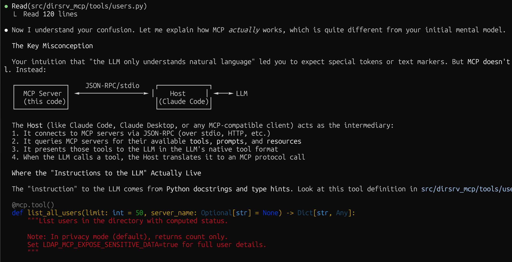

For a while I had wanted to confirm my understanding of the way an MCP server integrates with its host LLM. Seeing this post by Simon Pichugin, on the 389-users mailing list the other day, announcing his LDAP MCP server, I figured it could help me with that unterstanding. That's because while I don't know a great deal about MCP, I do know plenty about LDAP. So I cloned the project and "dove" in to the code. Unfortunately it wasn't entirely clear to me from the code what was going on so I asked Claude (using Opus 4.5). The resulting session is interesting in that it shows some quite human-like behavior by the LLM: It begins by trotting out a superficial explaination, and refutes my initial suggestion as to how MCP/LLM integration works. Then, when challenged to back up its assertions, it backtracks and provides a more accurate explaination. Finally it makes some insightful pronouncements on the utility of the MCP concept. Overall the session shows how an LLM can be used for more "high level" software engineering purposes, the kind of "understanding" that in the past would have been gained from a senior/experienced developer.
Claude code outputs very nice looking text in the terminal, featuring colors and non-ASCII characters (modulo it doesn't always get its ASCII-art quite right):  Unfortunately it turns out to be quite challenging to capture this output in a way suitable for display in a web page. You can ask Claude to write what it just told you to a markdown file. You can see that being done in the session a couple of times. But Claude will in that case create a new document based on the concepts of the preceeding output. It won't write the text verbatim. It tends to both embellish and omit details randomly, and even if you ask for the user input to be included, it tends to summerize. Simply copying the terminal session into an HTML file I found doesn't work either because the fancy formatting Claude uses appears to outfox at least my terminal program. Finally I found a utility writen by Simon Wilson that extracts Claude code session content through its API. This is how the session transcript was generated. I hand-edited the resulting HTML to include a link to this page.